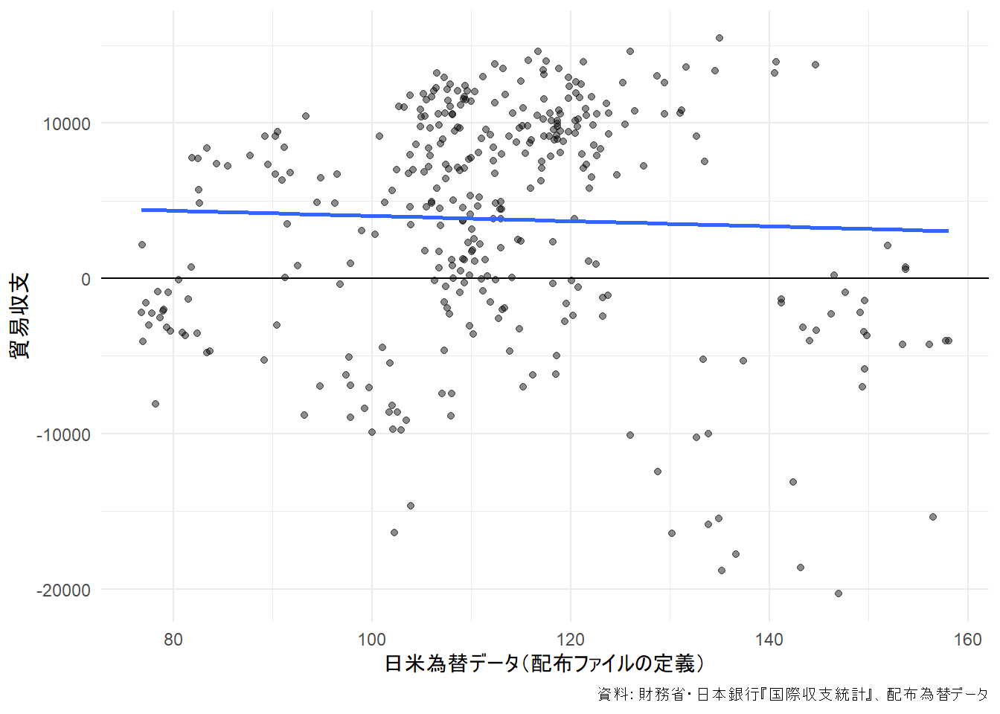
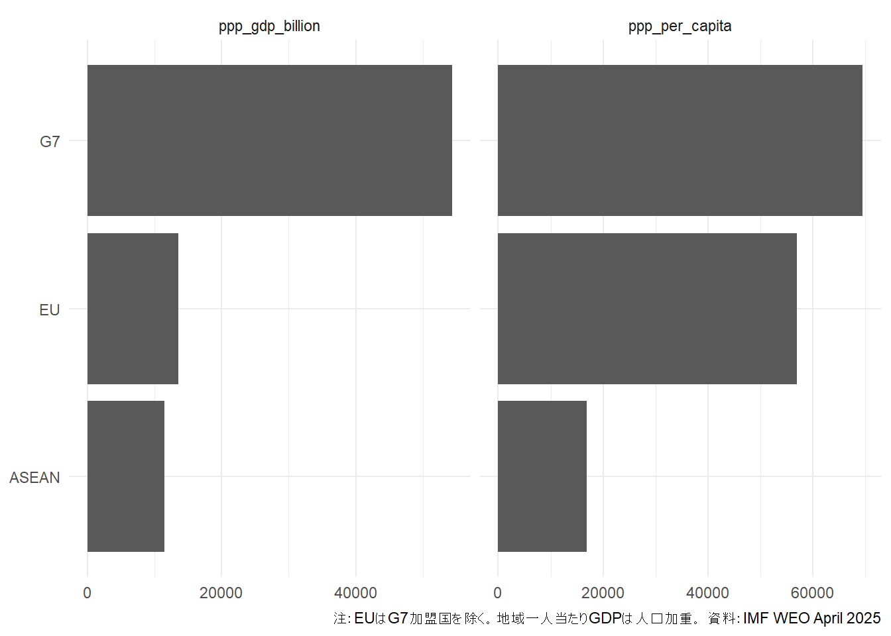
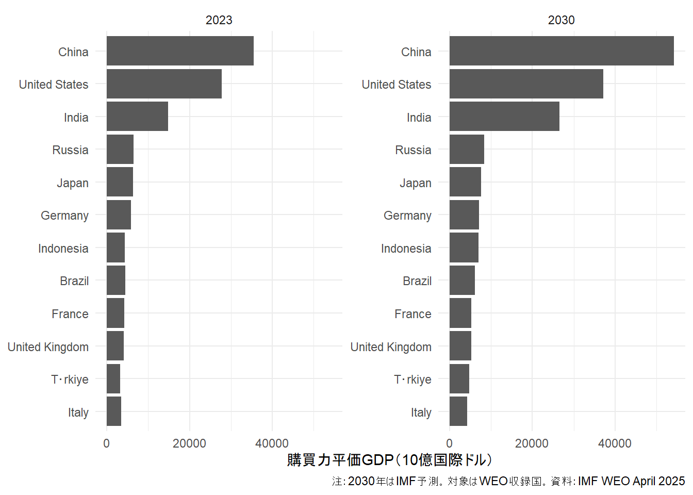
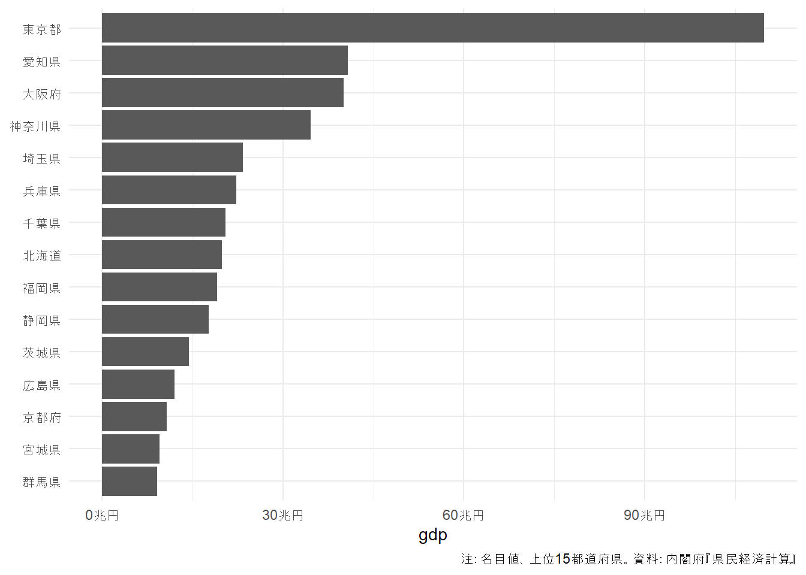
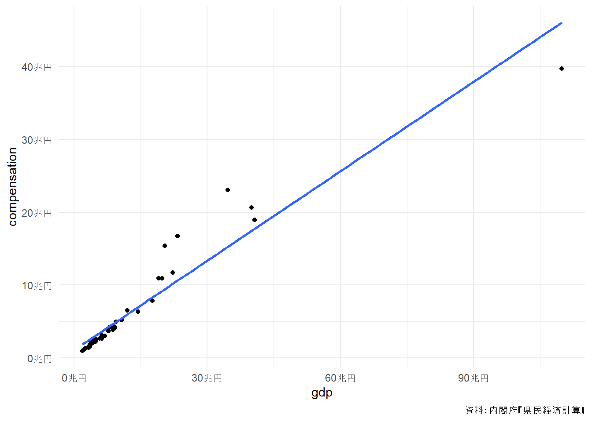
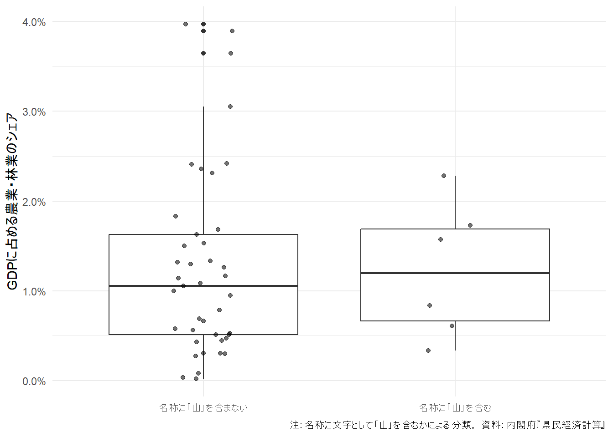

?fill第6章 総合演習
国際収支・WEO・都道府県GDPを自力で整える
0.1 この章の進め方
この章は、追加配布された3組の実データを使う総合演習です。
| 演習 | 使用ファイル | 主な技能 |
|---|---|---|
| A 国際収支統計 | a_bop.csv、a_usdjpy.csv |
欠損補完、派生変数、結合、表の変形 |
| B World Economic Outlook | b_weo.xlsx |
複数系列の縦長化、地域集計、ランキング |
| C 都道府県別GDP | c_pref_gdp.xlsx |
複数シート、結合、文字列条件、比率 |
問題文は、配布された exercise_questions.docxを基礎にしています。まず解答例を開かずに取り組み、各処理の前後で行数・キー・欠損・単位を確認してください。
Important提出物の最低要件
- 原データを上書きしない。
- 読み込み条件、文字コード、シート名をコードに残す。
- 集計前後の観測単位を説明する。
- 表または図に単位、対象年、出所を付ける。
- 数値結果だけでなく、解釈上の注意を短く書く。
1 A. 国際収支統計
資料：財務省・日本銀行『国際収支統計』
1.1 A-Q1 読み込み、構造確認、年の欠損補完
a_bop.csvを読み込み、Rにどのように保存されたか確認してください。その後の分析に使えるよう、year列の欠損を埋めてください。
確認する項目は次のとおりです。
- 行数、列数、列名
- 各列の型
- 列ごとの欠損数
- 最初と最後の年月
yearを補完する方向と、その根拠
Tipヒント
fill()のヘルプを確認します。年は、各年の最初の月だけ記録され、その下の月へ同じ値を引き継ぐ形式です。
bop_raw <- read_csv(
file.path("data_raw", "a_bop.csv"),
locale = locale(encoding = "UTF-8"),
show_col_types = FALSE
)
# ここから構造確認とfill()を追加する
NoteA-Q1 解答例
bop_raw <- read_csv(
file.path("data_raw", "a_bop.csv"),
locale = locale(encoding = "UTF-8"),
trim_ws = TRUE,
na = c("", "NA"),
show_col_types = FALSE
)
list(
dimensions = dim(bop_raw),
column_names = names(bop_raw),
column_classes = map_chr(bop_raw, ~ paste(class(.x), collapse = "/")),
missing_by_column = colSums(is.na(bop_raw))
)$dimensions
[1] 351 10
$column_names
[1] "year" "month" "current_account"
[4] "goods_services_balance" "trade_balance" "exports"
[7] "imports" "services_balance" "primary_income"
[10] "secondary_income"
$column_classes
year month current_account
"numeric" "numeric" "numeric"
goods_services_balance trade_balance exports
"numeric" "logical" "numeric"
imports services_balance primary_income
"numeric" "numeric" "numeric"
secondary_income
"numeric"
$missing_by_column
year month current_account
321 0 0
goods_services_balance trade_balance exports
0 351 0
imports services_balance primary_income
0 0 0
secondary_income
0 bop <- bop_raw |>
fill(year, .direction = "down") |>
mutate(
year = as.integer(year),
month_no = as.integer(month),
date = make_date(year, month_no, 1)
)
bop |>
summarise(
rows = n(),
first_date = min(date),
last_date = max(date),
missing_year = sum(is.na(year))
)# A tibble: 1 × 4
rows first_date last_date missing_year
<int> <date> <date> <int>
1 351 1996-01-01 2025-03-01 0fill(..., .direction = "down")を使うのは、年の値が最初の月から後続月へ適用される表だからです。上下を逆にすると、前年末の行へ翌年の値を誤って入れる可能性があります。
1.2 A-Q2 貿易収支を定義から作る
配布ファイルではtrade_balanceを空欄にしています。残りの系列から定義に沿って計算し、データへ追加してください。
その後、次の関係も確認します。
[ = + ]
NoteA-Q2 解答例
bop <- bop |>
mutate(
trade_balance = exports - imports,
goods_services_balance_calc = trade_balance + services_balance,
goods_services_diff =
goods_services_balance - goods_services_balance_calc
)
bop |>
summarise(
min_difference = min(goods_services_diff, na.rm = TRUE),
max_difference = max(goods_services_diff, na.rm = TRUE),
nonzero_rows = sum(goods_services_diff != 0, na.rm = TRUE)
)# A tibble: 1 × 3
min_difference max_difference nonzero_rows
<dbl> <dbl> <int>
1 -1 1 111配布データでは再計算との差が小幅に残る月があります。丸めや公表値の作成過程を確認せず、機械的に「誤り」と判断しないでください。
1.3 A-Q3 任意の月の悪化年を探す
任意の月を一つ選び、その月の貿易収支が最も悪化していた年を確認してください。月を変更しても同じコードで再計算できるよう、target_monthを作ります。
余裕があれば、a_usdjpy.csvを使って為替相場との関係も確認してください。
target_month <- 1
# filter()とslice_min()を使って調べる
NoteA-Q3 解答例：月別の最悪年
check_worst_trade_balance <- function(data, target_month) {
stopifnot(target_month %in% 1:12)
data |>
filter(month_no == target_month) |>
slice_min(trade_balance, n = 1, with_ties = TRUE) |>
select(year, month, exports, imports, trade_balance)
}
check_worst_trade_balance(bop, target_month = 1)# A tibble: 1 × 5
year month exports imports trade_balance
<int> <dbl> <dbl> <dbl> <dbl>
1 2023 1 79492 95927 -16435配布スナップショットでは、1月の最小値は2023年です。確認値を答えとして写すのではなく、自分のコードが同じ観測を返すか照合してください。
NoteA-Q3 解答例：為替データとの結合
fx <- read_csv(
file.path("data_raw", "a_usdjpy.csv"),
locale = locale(encoding = "UTF-8"),
trim_ws = TRUE,
na = c("", "NA"),
show_col_types = FALSE
) |>
fill(year, .direction = "down") |>
mutate(
year = as.integer(year),
month_no = as.integer(month),
date = make_date(year, month_no, 1)
) |>
select(date, usd_jpy)
bop_fx <- bop |>
left_join(
fx,
by = join_by(date),
relationship = "one-to-one"
)
stopifnot(nrow(bop_fx) == nrow(bop))
bop_fx |>
summarise(
observations = sum(complete.cases(trade_balance, usd_jpy)),
correlation = cor(trade_balance, usd_jpy, use = "complete.obs")
)# A tibble: 1 × 2
observations correlation
<int> <dbl>
1 351 -0.0373bop_fx |>
ggplot(aes(x = usd_jpy, y = trade_balance)) +
geom_point(alpha = 0.45) +
geom_smooth(method = "lm", se = FALSE) +
geom_hline(yintercept = 0) +
labs(
x = "日米為替データ（配布ファイルの定義）",
y = "貿易収支",
caption = "資料：財務省・日本銀行『国際収支統計』、配布為替データ"
) +
theme_minimal(base_family = "sans")
単純相関は、時差、原油価格、国内外需要、輸出入価格、構造変化を統制していません。散布図だけで「円安が貿易収支を改善・悪化させた」と因果判断することはできません。
1.4 A-Q4 レポート向けに表を変形する
現在の月次表は縦に長いため、輸出・輸入の推移をレポートで確認しやすい形へ変形してください。分析用の縦長データと、掲載用の横持ち表は目的が異なります。
NoteA-Q4 解答例
まず、グラフや時系列処理に使いやすい縦長データを作ります。
trade_long <- bop |>
select(date, year, month_no, exports, imports) |>
pivot_longer(
cols = c(exports, imports),
names_to = "series",
values_to = "value"
)
trade_long |>
slice_head(n = 8)# A tibble: 8 × 5
date year month_no series value
<date> <int> <int> <chr> <dbl>
1 1996-01-01 1996 1 exports 33994
2 1996-01-01 1996 1 imports 26083
3 1996-02-01 1996 2 exports 35080
4 1996-02-01 1996 2 imports 26690
5 1996-03-01 1996 3 exports 36206
6 1996-03-01 1996 3 imports 26533
7 1996-04-01 1996 4 exports 34530
8 1996-04-01 1996 4 imports 28133掲載用には、1行を1年とし、月を列にできます。
trade_report <- trade_long |>
select(year, month_no, series, value) |>
mutate(month_key = sprintf("m%02d", month_no)) |>
select(-month_no) |>
pivot_wider(
names_from = c(series, month_key),
values_from = value,
names_glue = "{series}_{month_key}"
) |>
arrange(year)
trade_report |>
slice_tail(n = 5)# A tibble: 5 × 25
year exports_m01 imports_m01 exports_m02 imports_m02 exports_m03 imports_m03
<int> <dbl> <dbl> <dbl> <dbl> <dbl> <dbl>
1 2021 63867 57105 64616 62867 67349 60193
2 2022 75684 78957 77899 84887 78250 84407
3 2023 79492 95927 81344 91613 80701 90702
4 2024 85002 84820 83916 90891 87375 93228
5 2025 84986 100342 96003 93903 90289 92491
# ℹ 18 more variables: exports_m04 <dbl>, imports_m04 <dbl>, exports_m05 <dbl>,
# imports_m05 <dbl>, exports_m06 <dbl>, imports_m06 <dbl>, exports_m07 <dbl>,
# imports_m07 <dbl>, exports_m08 <dbl>, imports_m08 <dbl>, exports_m09 <dbl>,
# imports_m09 <dbl>, exports_m10 <dbl>, imports_m10 <dbl>, exports_m11 <dbl>,
# imports_m11 <dbl>, exports_m12 <dbl>, imports_m12 <dbl>write_csv(
trade_long,
file.path("data_clean", "exercise_a_trade_long.csv"),
na = ""
)
write_csv(
trade_report,
file.path("output_data", "exercise_a_trade_report.csv"),
na = ""
)1.5 Aの確認値
配布スナップショットは1996年1月から2025年3月までの351行です。全期間で最も小さい貿易収支は2022年10月の-20330です。これらは、読み込み・年補完・月変換・派生変数が正しいかを確かめる検算値として使います。
2 B. World Economic Outlook
資料：IMF, World Economic Outlook Database, April 2025
2.1 Bの準備：WEOを縦長へ変換する
WEOは、1行が国×指標、年が列に並ぶ横長データです。年列を自動検出し、値を数値へ変換します。
Note共通の読み込みコード
weo_raw <- read_excel(
file.path("data_raw", "b_weo.xlsx"),
sheet = "weo",
col_types = "text",
na = c("", "--", "...", "n/a")
)
group_map <- read_excel(
file.path("data_raw", "b_weo.xlsx"),
sheet = "group_map"
) |>
select(iso3, group) |>
distinct(iso3, .keep_all = TRUE)
year_columns <- names(weo_raw) |>
str_subset("^(19|20)\\d{2}$")
weo_long <- weo_raw |>
pivot_longer(
cols = all_of(year_columns),
names_to = "year",
values_to = "value_raw"
) |>
mutate(
year = parse_integer(year),
value = parse_number(value_raw)
)
list(
countries = n_distinct(weo_long$iso),
subjects = n_distinct(weo_long$subject_code),
first_year = min(weo_long$year),
last_year = max(weo_long$year)
)$countries
[1] 196
$subjects
[1] 44
$first_year
[1] 1980
$last_year
[1] 20302.2 B-Q1 2023年のG7・EU・ASEAN比較
2023年について、G7、EU（G7加盟国を除く）、ASEANの購買力平価GDP（PPPGDP）と一人当たり購買力平価GDP（PPPPC）を比較してください。必要に応じてgroup_mapを使います。
Warning一人当たりGDPを足し合わせない
地域全体の一人当たりGDPは、国別PPPPCの単純合計ではありません。地域のGDP合計を人口合計で割るか、国別一人当たりGDPを人口で加重します。WEOの人口LPは百万人、PPPGDPは10億国際ドルなので、単位をそろえます。
NoteB-Q1 解答例
weo_2023_panel <- weo_long |>
filter(
year == 2023,
subject_code %in% c("PPPGDP", "PPPPC", "LP")
) |>
select(iso, country, subject_code, value) |>
pivot_wider(
names_from = subject_code,
values_from = value
) |>
inner_join(
group_map,
by = join_by(iso == iso3),
relationship = "many-to-one"
)
weo_2023_group <- weo_2023_panel |>
summarise(
countries = n_distinct(iso),
ppp_gdp_billion = sum(PPPGDP, na.rm = TRUE),
population_million = sum(LP, na.rm = TRUE),
ppp_per_capita = ppp_gdp_billion / population_million * 1000,
median_country_ppp_per_capita = median(PPPPC, na.rm = TRUE),
.by = group
) |>
arrange(desc(ppp_gdp_billion))
weo_2023_group# A tibble: 3 × 6
group countries ppp_gdp_billion population_million ppp_per_capita
<chr> <int> <dbl> <dbl> <dbl>
1 G7 7 54339. 782. 69512.
2 EU 24 13553. 238. 56938.
3 ASEAN 10 11470. 680. 16873.
# ℹ 1 more variable: median_country_ppp_per_capita <dbl>weo_2023_group |>
pivot_longer(
cols = c(ppp_gdp_billion, ppp_per_capita),
names_to = "measure",
values_to = "value"
) |>
ggplot(aes(x = fct_reorder(group, value), y = value)) +
geom_col() +
coord_flip() +
facet_wrap(~ measure, scales = "free_x") +
labs(
x = NULL,
y = NULL,
caption = paste(
"注：EUはG7加盟国を除く。地域一人当たりGDPは人口加重。",
"資料：IMF WEO April 2025"
)
) +
theme_minimal(base_family = "sans")
配布データの2023年PPPGDP合計は、G7が54338.781、EUが13553.258、ASEANが11469.904です。
2.3 B-Q2 2023年と2030年のランキング
2023年と予測端点の2030年について、次を作成してください。
- 国別の購買力平価GDPランキング
- 地域別の購買力平価GDPランキング
- 2023年から2030年に順位がどう変化するか
- 余裕があれば、実質成長率、物価、政府債務など別の変数でも比較
2030年は予測値であることを、表または図の注記に明示します。
NoteB-Q2 解答例
country_rank <- weo_long |>
filter(
subject_code == "PPPGDP",
year %in% c(2023, 2030)
) |>
left_join(
group_map,
by = join_by(iso == iso3),
relationship = "many-to-one"
) |>
group_by(year) |>
mutate(rank = min_rank(desc(value))) |>
ungroup() |>
select(year, rank, iso, country, group, ppp_gdp_billion = value) |>
arrange(year, rank)
country_rank |>
filter(rank <= 15)# A tibble: 30 × 6
year rank iso country group ppp_gdp_billion
<int> <int> <chr> <chr> <chr> <dbl>
1 2023 1 CHN China <NA> 35478.
2 2023 2 USA United States G7 27721.
3 2023 3 IND India <NA> 14846.
4 2023 4 RUS Russia <NA> 6477.
5 2023 5 JPN Japan G7 6371.
6 2023 6 DEU Germany G7 5876.
7 2023 7 BRA Brazil <NA> 4471.
8 2023 8 IDN Indonesia ASEAN 4335.
9 2023 9 FRA France G7 4211.
10 2023 10 GBR United Kingdom G7 4140.
# ℹ 20 more rowsrank_change <- country_rank |>
select(iso, country, group, year, rank, ppp_gdp_billion) |>
pivot_wider(
names_from = year,
values_from = c(rank, ppp_gdp_billion),
names_glue = "{.value}_{year}"
) |>
mutate(
rank_change = rank_2023 - rank_2030,
ppp_gdp_growth = ppp_gdp_billion_2030 / ppp_gdp_billion_2023 - 1
) |>
arrange(rank_2030)
rank_change# A tibble: 196 × 9
iso country group rank_2023 rank_2030 ppp_gdp_billion_2023
<chr> <chr> <chr> <int> <int> <dbl>
1 CHN China <NA> 1 1 35478.
2 USA United States G7 2 2 27721.
3 IND India <NA> 3 3 14846.
4 RUS Russia <NA> 4 4 6477.
5 JPN Japan G7 5 5 6371.
6 DEU Germany G7 6 6 5876.
7 IDN Indonesia ASEAN 8 7 4335.
8 BRA Brazil <NA> 7 8 4471.
9 GBR United Kingdom G7 10 9 4140.
10 FRA France G7 9 10 4211.
# ℹ 186 more rows
# ℹ 3 more variables: ppp_gdp_billion_2030 <dbl>, rank_change <int>,
# ppp_gdp_growth <dbl>region_rank <- weo_long |>
filter(
subject_code == "PPPGDP",
year %in% c(2023, 2030)
) |>
inner_join(
group_map,
by = join_by(iso == iso3),
relationship = "many-to-one"
) |>
summarise(
ppp_gdp_billion = sum(value, na.rm = TRUE),
.by = c(year, group)
) |>
group_by(year) |>
mutate(rank = min_rank(desc(ppp_gdp_billion))) |>
ungroup() |>
arrange(year, rank)
region_rank# A tibble: 6 × 4
year group ppp_gdp_billion rank
<int> <chr> <dbl> <int>
1 2023 G7 54339. 1
2 2023 EU 13553. 2
3 2023 ASEAN 11470. 3
4 2030 G7 69980. 1
5 2030 EU 17997. 2
6 2030 ASEAN 17898. 3country_rank |>
filter(rank <= 12) |>
ggplot(
aes(
x = ppp_gdp_billion,
y = fct_reorder(country, ppp_gdp_billion)
)
) +
geom_col() +
facet_wrap(~ year, scales = "free_y") +
labs(
x = "購買力平価GDP（10億国際ドル）",
y = NULL,
caption = "注：2030年はIMF予測。対象はWEO収録国。資料：IMF WEO April 2025"
) +
theme_minimal(base_family = "sans")
2.4 B-Q3 回帰・時系列分析用のパネルを作る
列に年、国名またはISOコード、GDP、説明変数候補が来る形へ変換してください。1行の観測単位は「国×年」です。
説明変数候補の例：
NGDP_RPCH：実質GDP成長率PCPIPCH：消費者物価上昇率NID_NGDP：投資のGDP比GGXWDG_NGDP：政府総債務のGDP比BCA_NGDPD：経常収支のGDP比LUR：失業率
NoteB-Q3 解答例
analysis_codes <- c(
"PPPGDP",
"PPPPC",
"LP",
"NGDP_RPCH",
"PCPIPCH",
"NID_NGDP",
"GGXWDG_NGDP",
"BCA_NGDPD",
"LUR"
)
weo_panel <- weo_long |>
filter(subject_code %in% analysis_codes) |>
select(iso, country, year, subject_code, value) |>
pivot_wider(
names_from = subject_code,
values_from = value
) |>
arrange(iso, year)
weo_panel |>
slice_head(n = 12)# A tibble: 12 × 12
iso country year NGDP_RPCH PPPGDP PPPPC NID_NGDP PCPIPCH LUR LP
<chr> <chr> <int> <dbl> <dbl> <dbl> <dbl> <dbl> <dbl> <dbl>
1 ABW Aruba 1980 NA NA NA NA NA NA NA
2 ABW Aruba 1981 NA NA NA NA NA NA NA
3 ABW Aruba 1982 NA NA NA NA NA NA NA
4 ABW Aruba 1983 NA NA NA NA NA NA NA
5 ABW Aruba 1984 NA NA NA NA NA NA NA
6 ABW Aruba 1985 NA NA NA NA NA NA NA
7 ABW Aruba 1986 NA 0.681 8389. NA NA 19.6 0.081
8 ABW Aruba 1987 16.1 0.81 9542. NA 3.64 14.5 0.085
9 ABW Aruba 1988 18.6 0.995 11341. NA 3.12 5 0.088
10 ABW Aruba 1989 12.1 1.16 12995. NA 3.99 1.5 0.089
11 ABW Aruba 1990 3.98 1.25 13869. NA 5.84 1.3 0.09
12 ABW Aruba 1991 7.98 1.40 15328. NA 5.55 6.08 0.091
# ℹ 2 more variables: GGXWDG_NGDP <dbl>, BCA_NGDPD <dbl>キーと欠損を確認します。
list(
duplicated_keys = weo_panel |>
count(iso, year) |>
filter(n > 1),
missing_by_variable = weo_panel |>
summarise(across(all_of(analysis_codes), ~ sum(is.na(.x))))
)$duplicated_keys
# A tibble: 0 × 3
# ℹ 3 variables: iso <chr>, year <int>, n <int>
$missing_by_variable
# A tibble: 1 × 9
PPPGDP PPPPC LP NGDP_RPCH PCPIPCH NID_NGDP GGXWDG_NGDP BCA_NGDPD LUR
<int> <int> <int> <int> <int> <int> <int> <int> <int>
1 821 942 905 900 946 2011 3131 1191 5171write_rds(
weo_panel,
file.path("data_clean", "exercise_b_weo_panel.rds")
)
write_csv(
weo_panel,
file.path("data_clean", "exercise_b_weo_panel.csv"),
na = ""
)回帰に進む前に、実績値と予測値の境界、国ごとの欠損、単位、外れ値、共通ショックを確認します。
3 C. 都道府県別GDP
資料：内閣府 令和3年度『県民経済計算』
3.1 C-Q1 縦長データへ変換し、その理由を考える
gdpとcompensationは、年が列に並ぶ横長データです。都道府県×年を1行とする縦長データへ変換してください。その形が分析に適する理由も説明します。
NoteC-Q1 解答例
pref_path <- file.path("data_raw", "c_pref_gdp.xlsx")
pref_wide_to_long <- function(data, value_name) {
data |>
select(-matches("^\\.\\.\\.")) |>
pivot_longer(
cols = matches("^\\d{4}$"),
names_to = "year",
values_to = value_name
) |>
mutate(
code = str_pad(as.character(code), width = 2, pad = "0"),
year = parse_integer(year)
)
}
pref_gdp_long <- read_excel(
pref_path,
sheet = "gdp"
) |>
pref_wide_to_long("gdp")
pref_comp_long <- read_excel(
pref_path,
sheet = "compensation"
) |>
pref_wide_to_long("compensation")
list(
gdp_dimensions = dim(pref_gdp_long),
compensation_dimensions = dim(pref_comp_long),
gdp_key_duplicates = pref_gdp_long |>
count(code, year) |>
filter(n > 1)
)$gdp_dimensions
[1] 517 4
$compensation_dimensions
[1] 517 4
$gdp_key_duplicates
# A tibble: 0 × 3
# ℹ 3 variables: code <chr>, year <int>, n <int>縦長にすると、filter(year == 2021)、group_by(pref)、ggplot(aes(x = year, ...))などを、年ごとの列名を個別指定せずに使えます。新しい年が追加されても、年列の規則が同じならコードを変更せず処理できます。
3.2 C-Q2 都道府県別GDPランキング
最新年である2021年のGDPランキングを作成してください。上位だけを示す場合は、何位まで表示したか明記します。
NoteC-Q2 解答例
pref_gdp_rank_2021 <- pref_gdp_long |>
filter(year == 2021) |>
arrange(desc(gdp)) |>
mutate(rank = row_number())
pref_gdp_rank_2021 |>
select(rank, code, pref, gdp) |>
slice_head(n = 15)# A tibble: 15 × 4
rank code pref gdp
<int> <chr> <chr> <dbl>
1 1 13 東京都 109796810
2 2 23 愛知県 40733038
3 3 27 大阪府 40046699
4 4 14 神奈川県 34633768
5 5 11 埼玉県 23364332
6 6 28 兵庫県 22266603
7 7 12 千葉県 20477976
8 8 01 北海道 19836211
9 9 40 福岡県 19047125
10 10 22 静岡県 17668173
11 11 08 茨城県 14397914
12 12 34 広島県 12042923
13 13 26 京都府 10700654
14 14 04 宮城県 9464098
15 15 10 群馬県 9161939pref_gdp_rank_2021 |>
slice_head(n = 15) |>
mutate(pref = fct_reorder(pref, gdp)) |>
ggplot(aes(x = pref, y = gdp)) +
geom_col() +
coord_flip() +
scale_y_continuous(
labels = scales::label_number(
scale = 1 / 1e6,
suffix = "兆円",
accuracy = 1
)
) +
labs(
x = NULL,
y = "gdp",
caption = "注：名目値、上位15都道府県。資料：内閣府『県民経済計算』"
) +
theme_minimal(base_family = "sans")
配布データの上位は、東京都、愛知県、大阪府、神奈川県、埼玉県です。
3.3 C-Q3 雇用者報酬とGDPを組み合わせる
雇用者報酬をGDPと結合し、規模と比率の両方から比較してください。
- 雇用者報酬額のランキング
compensation / gdpのランキング- 2つのランキングが異なる理由
NoteC-Q3 解答例
pref_income_panel <- pref_gdp_long |>
inner_join(
pref_comp_long,
by = join_by(code, pref, year),
relationship = "one-to-one"
) |>
mutate(compensation_to_gdp = compensation / gdp)
stopifnot(nrow(pref_income_panel) == nrow(pref_gdp_long))pref_income_2021 <- pref_income_panel |>
filter(year == 2021)
list(
compensation_amount = pref_income_2021 |>
arrange(desc(compensation)) |>
select(pref, compensation) |>
slice_head(n = 10),
compensation_ratio = pref_income_2021 |>
arrange(desc(compensation_to_gdp)) |>
select(pref, compensation_to_gdp) |>
slice_head(n = 10)
)$compensation_amount
# A tibble: 10 × 2
pref compensation
<chr> <dbl>
1 東京都 39703831
2 神奈川県 23064203
3 大阪府 20630920
4 愛知県 18950279
5 埼玉県 16704058
6 千葉県 15370814
7 兵庫県 11736876
8 福岡県 10935509
9 北海道 10920320
10 静岡県 7851962
$compensation_ratio
# A tibble: 10 × 2
pref compensation_to_gdp
<chr> <dbl>
1 千葉県 0.751
2 埼玉県 0.715
3 神奈川県 0.666
4 奈良県 0.630
5 沖縄県 0.613
6 福岡県 0.574
7 長崎県 0.561
8 北海道 0.551
9 石川県 0.545
10 広島県 0.540pref_income_2021 |>
ggplot(aes(x = gdp, y = compensation)) +
geom_point() +
geom_smooth(method = "lm", se = FALSE) +
scale_x_continuous(labels = scales::label_number(scale = 1 / 1e6, suffix = "兆円")) +
scale_y_continuous(labels = scales::label_number(scale = 1 / 1e6, suffix = "兆円")) +
labs(
x = "gdp",
y = "compensation",
caption = "資料：内閣府『県民経済計算』"
) +
theme_minimal(base_family = "sans")
compensation / gdpは比較に使えますが、自営業者の混合所得などを含む完全な労働分配率とは限りません。指標名を過度に一般化しないでください。
3.4 C-発展 第2章の人口APIと結合する
第2章でdata_clean/pref_population_2020.csvを作成していれば、2020年の都道府県GDPと結合して一人当たりGDPを計算できます。これは、APIで取得した実データを、別の公的統計と結合して分析へ渡す練習です。
population_path <- file.path("data_clean", "pref_population_2020.csv")
pref_gdp_per_capita_2020 <- NULL
if (file.exists(population_path)) {
population_2020 <- read_csv(
population_path,
col_types = cols(code = col_character()),
show_col_types = FALSE
) |>
transmute(
code = str_pad(code, width = 2, pad = "0"),
pref,
population
)
pref_gdp_2020 <- read_excel(
file.path("data_raw", "c_pref_gdp.xlsx"),
sheet = "gdp"
) |>
select(code, pref, `2020`) |>
transmute(
code = str_pad(as.character(code), width = 2, pad = "0"),
pref,
year = 2020L,
gdp = `2020`
)
pref_gdp_per_capita_2020 <- pref_gdp_2020 |>
inner_join(
population_2020,
by = join_by(code, pref),
relationship = "one-to-one"
) |>
mutate(
gdp_per_capita_10k_yen = gdp * 100 / population
) |>
arrange(desc(gdp_per_capita_10k_yen))
stopifnot(nrow(pref_gdp_per_capita_2020) == 47)
pref_gdp_per_capita_2020 |>
select(pref, gdp, population, gdp_per_capita_10k_yen) |>
slice_head(n = 10)
} else {
message(
"第2章をrun_api:trueで実行し、",
"data_clean/pref_population_2020.csvを作成してください。"
)
}if (!is.null(pref_gdp_per_capita_2020)) {
pref_gdp_per_capita_2020 |>
slice_head(n = 15) |>
mutate(pref = fct_reorder(pref, gdp_per_capita_10k_yen)) |>
ggplot(aes(x = pref, y = gdp_per_capita_10k_yen)) +
geom_col() +
coord_flip() +
labs(
x = NULL,
y = "一人当たりGDP（万円）",
caption = paste(
"資料：内閣府『県民経済計算』、",
"e-Stat『人口推計』から作成"
)
) +
theme_minimal(base_family = "sans")
}
Warning年と定義をそろえる
GDPは2020年、人口は2020年10月1日現在を使っています。年が一致していても、フローと時点値の違い、名目・実質、単位、都道府県コードの定義を確認してください。また、順位は経済厚生そのものを表すものではありません。
3.5 C-Q4 「山」を含む県と農林業シェア
agri_forestryシートを使い、都道府県名に「山」を含む県と、それ以外で、GDPに占める農業・林業のシェアを比較してください。
Tipヒント
?str_detect
NoteC-Q4 解答例
pref_agri <- read_excel(
pref_path,
sheet = "agri_forestry"
) |>
mutate(
code = str_pad(as.character(code), width = 2, pad = "0"),
year = as.integer(year),
agriculture_forestry = agriculture + forestry
)
pref_agri_share <- pref_agri |>
inner_join(
pref_gdp_long,
by = join_by(code, pref, year),
relationship = "one-to-one"
) |>
mutate(
contains_yama = str_detect(pref, "山"),
agriculture_forestry_share = agriculture_forestry / gdp
)
pref_agri_share |>
filter(contains_yama) |>
select(pref, agriculture_forestry_share)# A tibble: 6 × 2
pref agriculture_forestry_share
<chr> <dbl>
1 山形県 0.0228
2 富山県 0.00608
3 山梨県 0.0157
4 和歌山県 0.0173
5 岡山県 0.00837
6 山口県 0.00335都道府県を同じ重みで平均した値と、GDP規模で加重した全体シェアを分けて計算します。
pref_agri_comparison <- pref_agri_share |>
summarise(
prefectures = n(),
unweighted_mean_share = mean(agriculture_forestry_share, na.rm = TRUE),
median_share = median(agriculture_forestry_share, na.rm = TRUE),
weighted_share =
sum(agriculture_forestry, na.rm = TRUE) / sum(gdp, na.rm = TRUE),
.by = contains_yama
)
pref_agri_comparison# A tibble: 2 × 5
contains_yama prefectures unweighted_mean_share median_share weighted_share
<lgl> <int> <dbl> <dbl> <dbl>
1 FALSE 41 0.0125 0.0105 0.00698
2 TRUE 6 0.0123 0.0120 0.0110 pref_agri_share |>
mutate(
name_group = if_else(
contains_yama,
"名称に「山」を含む",
"名称に「山」を含まない"
)
) |>
ggplot(aes(x = name_group, y = agriculture_forestry_share)) +
geom_boxplot() +
geom_jitter(width = 0.12, alpha = 0.55) +
scale_y_continuous(labels = scales::label_percent(accuracy = 0.1)) +
labs(
x = NULL,
y = "GDPに占める農業・林業のシェア",
caption = paste(
"注：名称に文字として「山」を含むかによる分類。",
"資料：内閣府『県民経済計算』"
)
) +
theme_minimal(base_family = "sans")
配布データで名称に「山」を含むのは、山形県、富山県、山梨県、和歌山県、岡山県、山口県です。この分類は地形や中山間地域を測るものではなく、文字列操作の演習です。
4 最終課題
A～Cのうち一つを選び、次の構成で短い分析レポートを作成してください。
- 問題設定
- データの出所、対象期間、観測単位
- 読み込みと品質確認
- 加工方法
- 表または図
- 結果の解釈
- 限界と追加で必要なデータ
TipAIを使う場合の提出ルール
AIへ渡した指示、採用したコード、自分で行った検算を短く記録してください。AIの文章を貼ることよりも、列名、単位、行数、定義を自分で確かめた過程を評価します。